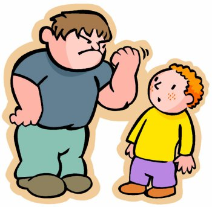
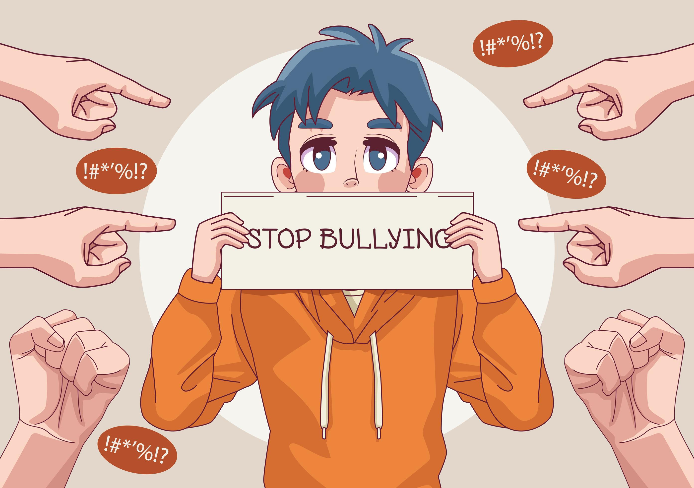

სამოქალაქო განათლების საიტი შეიქმნა იმისთვის რომ ხალხმა წაიკითხოს თუ რა ზიანი მოაქ ადამიანზე ცუდ მობყრობას
გაეცანით რამდენიმე ტიპს!
ბულინგი!!!
ტერმინი ბულინგი (ინგ.Bullying)დაშინებას, ჩაგვრას, დატერორებას ნიშნავს. ის შეიძლება განიმარტოს, როგორც წინასწარგანზრახული, განმეორებადი აგრესიული ქმედება, რომელიც მიმართულია სხვათა საზიანოდ. მას ყოველთვის ჰყავს სამიზნე, რომელზედაც ადამიანი ან ადამიანთა ჯგუფი ძალის დემონსტრირებას ცდილობს.
გამოჰყოფენ ბულინგის შემდეგ ტიპებს: ფიზიკური (დარტყმა, ხელის ან წიხლის კვრა, სხეულის სხვადასხვა სახის დაზიანება და ა.შ.);
ვერბალური (დამცინავი სახელით მიმართვა, სიტყვიერი შეურაცხყოფა, ჰომოფობიური და რასისტული გამონათქვამები);
ფარული/შენიღბული ბულინგი (რთული მისახვედრია როდის ხორციელდება; მოძალადე "ჩაგრული" პერსონის ზურგს უკან მოქმედებს, რათა საფრთხე შეუქმნას მის
რეპუტაციას და დაამციროს საზოგადოების წინაშე);
კიბერბულინგი (ციფრული ტექნოლოგიების გამოყენებით, ფარული ან აშკარა დაშინების მიზნით, განხორციელებული ქმედება."კიბერბულინგში" მოიაზრება: სოციალურ ქსელებში შეურაცხმყოფელი ფოტოების ან ვიდეოს განთავსება, უხამსი ჭორების გავრცელება, მავნე მოკლეტექსტური შეტყობინებების გაგზავნა, სხვათა სახელით გვერდებისა და ანგარიშების შექმნა).
ბულინგის შემთხვევებს ყოველდღიურად ხშირად ვხვდებით ოჯახებში, სამუშაო ადგილებსა და, განსაკუთრებით, სკოლებში. აშშ-ში ჩატარებული კვლევების თანახმად ყოველი მეოთხე სკოლის მოსწავლე ბულინგის მსხვერპლია. UCLA-ს მონაცემების მიხედვით, საშუალო სკოლაში ბულინგს ხელს უწყობს სოციალური სტატუსი და პოპულარობა. ლოს ანჯელესის 11 საშუალო სკოლაში გამოკითხეს 1895 მოსწავლე. გამოკითხვების თანახმად არსებობს სტერეოტიპი: ბავშვი, რომელიც "ავტორიტეტად" ითვლება ხშირად ჩაგრავს სხვებს და, აქედან გამომდინარე, მჩაგვრელი ყოველთვის "მაგარ" ადამიანთან ასოცირდება. DHHS (Department of Health and Human Services) -ის 2014 წლის მონაცემებით მოზარდების 70, 6% აღიარებს, რომ შესწრებია ბულინგის შემთხვევას, ხოლო, დაახლოებით, 30% აღნიშნავს, რომ თვითონ ყოფილა ბულინგის მსხვერპლი.
მოძალადის მახასიათებლები:
უყვართ სხვებზე ბატონობა;
არიან იმპულსურები და ადვილად ბრაზდებიან; არიან აგრესიულები და გამომწვევად იქცევიან;
მსხვერპლის მიმართ არ განიცდიან თანაგრძნობას.
ბულინგის მსხვერპლი ბავშვის ემოციური და ქცევითი მახასიათებლები:
აქვთ ძილთან და კვებასთან დაკავშირებული პრობლემები;
ხშირად ტირიან და შფოთავენ;
ადვილად ეცვლებათ განწყობა;
დილით ცუდ ხასიათზე იღვიძებენ;
არაადეკვატურად იქცევიან;
გამუდმებით "კარგავენ" ფულს ან იწყებენ მოპარვას.
ფიზიკური მახასიათებლები:
აქვს აუხსნელი სისხლჩაქცევები, ნაკაწრები და სხეულზე არსებული სხვა იარები ;
სახლში დაზიანებული ნივთებითა და დახეული ტანსაცმლით ბრუნდება;
მშიერი მიდის სახლში.
მახასიათებლები, რომლებიც სკოლას უკავშირდება:
არ უნდა სკოლაში სიარული;
სკოლაში წასვლისას იცვლის მარშრუტს და სხვადასხვა გზით მიდის "დანიშნულების ადგილამდე";
სკოლაში წასვლის ეშინია;
საგრძნობლად უარესდება აკადემიური მოსწრება. სხვა ნიშნები:
მსხვერპლი ხშირად მარტოა, სხვა ბავშვებისგან გარიყულია;
აქვს დაბალი თვითშეფასება;
უჭირს გაბედულად საუბარი.

შეაჩერეთ ბულინგი იყავით მეგობრულნი (Stop bullying, be friendly)
შეწყვიტეთ ბულინგი იყავით კეთილ განწყობილი სხვა ადამიანზე და ნუ მიაყენებთ სიტყვიერ/ფიზიკურ ტრამვას!

თუ გსურთ ჩაერთოთ კეთილ საქმეში გადადით გვერზე "გამოწვევები"